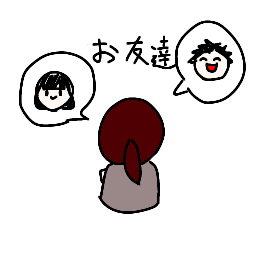
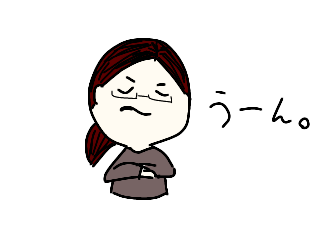
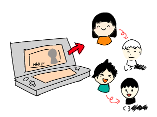
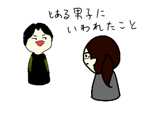
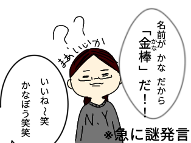
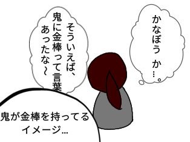
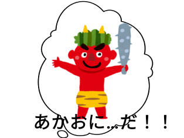
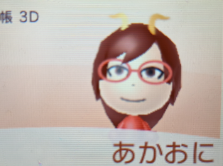
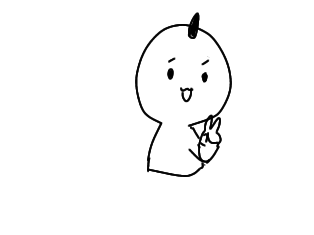

あかおに
小学生の時に創られたキャラクター。あかおに。今回はこのキャラクターについて紹介しようと思う。
| 氏名 | あかおに |
|---|---|
| 年齢 | １８歳 |
| 誕生日 | ４月 |
| 好物 | 杏仁豆腐 |
| 苦手 | アボガド |
小学５年の時、うごメモをやりたすぎて親に妹と共に泣きながら願い３ＤＳをかってもらった。
3DSを買ったことを友達に教えるとフレンドになってくれた。フレンドになると個人を識別するMiiというキャラクターの作成が必要になった。
正直自分の名前でも良かったが、それでは全く味気がない。悩みどころだ、、。悩んでいると？
友達が”色”をベースにしてキャラクターを作っていたことに気付いた。
それだ！！！と方向が定まった。しかし、色は何にするのか？と新たな問題に立ちはだかる。
当時の私の記憶で何か案がないかなと考えてみると、
   色もイメージも合致したので意外と早く完成した。完成したのはコチラ↓
このMiiを使ってたくさん友達と会話したり、フレンドにしか知らない名前だからこれを使って呼び合ったりしているうちに、いつしか自分の分身体になった。
そして簡略化されたものが↓
ものすごく簡略化されているし雑な気がするが、これが私の分身体だ。
ノリでつくった。雑です。(*- -)(*_ _)ﾍﾟｺﾘ
閲覧ありがとうございました！！！